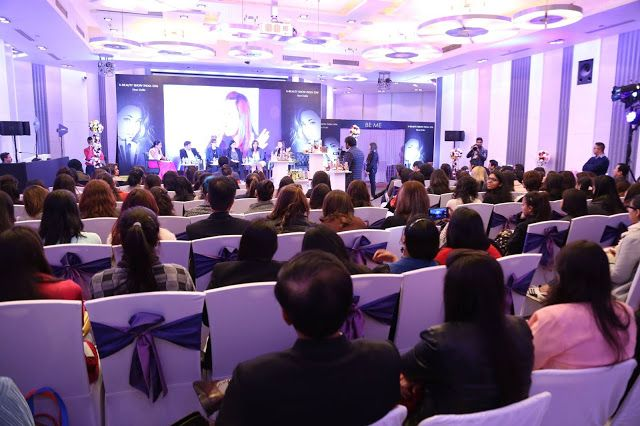
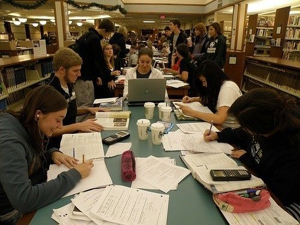

Kegiatan Seminar dan Acara Kampus
Kegiatan seminar menjadi kesempatan bagi mahasiswa untuk menambah wawasan dan mendapatkan pengalaman baru.

Kegiatan seminar menjadi kesempatan bagi mahasiswa untuk menambah wawasan dan mendapatkan pengalaman baru.

Belajar bersama membantu mahasiswa berdiskusi, bertukar ide, dan memahami materi perkuliahan.

Persiapan belajar yang baik membantu mahasiswa mengatur materi dan menjalani kegiatan perkuliahan.